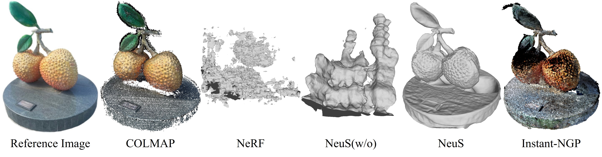

3D Reconstruction of Campus Objects
Abstract
A novel approach to reconstructing the surfaces of three-dimensional objects based on two-dimensional images captured from a variety of angles was developed by NeuS. Based on NeuS, we made some improvements to improve the quality of the reconstruction. Firstly, in terms of the production of masks, we directly apply this artificial intelligence tool called remove.bg based on U^2-Net when we are mating images; in addition, it performs with a high degree of precision when identifying the objects that are the focus of our attention. By utilizing this tool, we are able to cut down on the amount of time that we spend on the production of masks, which in turn allows us to increase our overall efficiency. Secondly, we derived a method that is similar to hierarchical sampling. But we only apply a coarse network to improve NeuS, which accomplishes a goal that is comparable to that of importance sampling; however, compared to viewing every sample as an self-reliant probabilistic estimate of the entire integral, we use the sampled values as a nonuniform discretization of the entire integration domain. Therefore, the improved method performs significantly better than the output of the reconstruction when it comes to the reconstruction of objects that have intricate structures and textures.
Method
Similar to NeRF, NeuS start by receiving a set of photos of a 3D object taken from different views. Then, it applies the signed distance function (SDF) to represent the object surface and uses a novel volume rendering approach to render the images by learning the neural SDF representation. Compared to the original volume rendering approach, this newly-developed scheme improves the accuracy of rendering outcomes. At the same time, it guarantees a high quality of surface reconstruction no matter how complex the object structure is.

